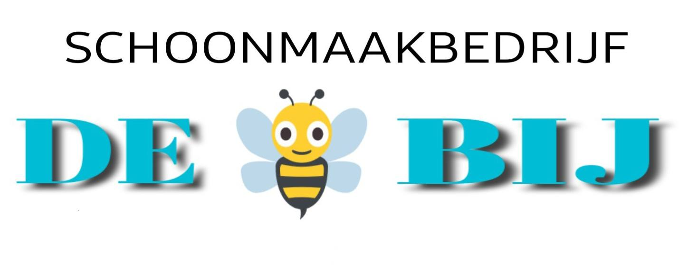

NL


Professionele schoonmaak, met zorg uitgevoerd.
NL
Professionele schoonmaak, met zorg uitgevoerd.
Ik bied professionele schoonmaakdiensten aan die zijn afgestemd op de specifieke behoeften van elk type ruimte. Als schoonmaakbedrijf in Asten ben ik gespecialiseerd in het onderhouden van netheid in diverse omgevingen – van particuliere woningen tot commerciële ruimtes en openbare gebouwen.
Met jarenlange ervaring zorg ik ervoor dat elke opdracht met de grootste zorg, precisie en efficiëntie wordt uitgevoerd. Ik lever volledige schoonmaakservices voor zowel langdurige samenwerkingen als eenmalige opdrachten, zoals schoonmaak na verbouwingen. Mijn diensten zijn volledig afgestemd op de wensen van de klant – voor een schoon resultaat en gegarandeerde tevredenheid.
Ik zorg regelmatig voor netheid in verschillende soorten ruimtes, zoals onder andere:
Biura
Hotele
Apartamenty
Pomieszczenia użytkowe
Klatki schodowe
Domy
Mieszkania
Kantyny
Sklepy
Pomieszczenia po remoncie
Garaże
Wycieranie kurzy
Odkurzanie
Pranie wykładzin
Mycie oszklenia
Czyszczenie sanitariów
Usuwanie kamienia
Mijn schoonmaakbedrijf is gevestigd in Asten (Zuid-Holland). Ik bied professionele schoonmaakdiensten aan binnen een straal van 100 km – ik reis naar woningen, appartementen, kantoren en commerciële panden.
Ik bied zowel reguliere schoonmaak als gespecialiseerde diensten aan – bijvoorbeeld na verbouwingen. Elke opdracht wordt afgestemd op de individuele wensen van de klant.
Zoek je een betrouwbaar schoonmaakbedrijf in Asten of omgeving? Neem gerust contact op. Ik garandeer een schone omgeving, nauwkeurig werk en tevredenheid met het resultaat.
Mijn schoonmaakdiensten zijn beschikbaar vanaf €23 tot €33 per uur, afhankelijk van de omvang van het werk en het type opdracht. Ik werk met mijn eigen schoonmaakmiddelen, maar als je liever je eigen producten gebruikt, kan de prijs iets lager zijn.
Een gedetailleerd overzicht van de standaard schoonmaaktaken is te vinden in het reglement. Extra diensten zoals het reinigen van ovens of koelkasten worden individueel geprijsd.
Voor meer informatie, neem gerust
Hieronder toon ik foto's van het resultaat van mijn werk – schoonmaak voor en na de uitgevoerde dienst. De foto's zijn afkomstig van verschillende opdrachten in woningen, appartementen en kantoren in Asten en omgeving.

VOOR

NA

VOOR

NA

VOOR
NA
VOOR

NA

VOOR

NA

VOOR

NA
Neem gerust contact met mij op voor schoonmaakdiensten in Asten en omgeving. Ik ben bereikbaar via WhatsApp, e-mail, telefoon en Facebook – kies de manier die voor jou het handigst is. Ik reageer snel en help je graag bij het vinden van de beste oplossing voor jouw situatie.
Contacturen:
Maandag – Vrijdag: 8:00 – 18:00
Zaterdag: 8:00 – 18:00
Als ik niet opneem, laat dan een bericht achter – ik bel je zeker terug.